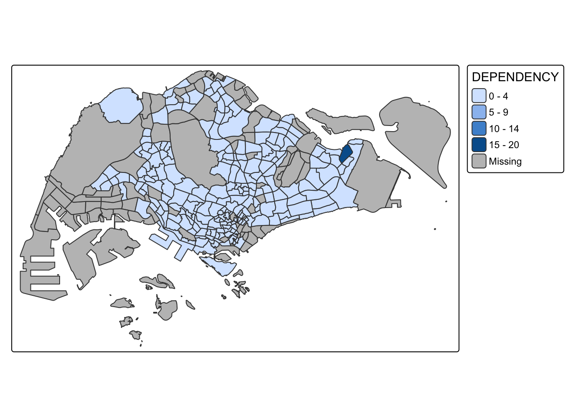
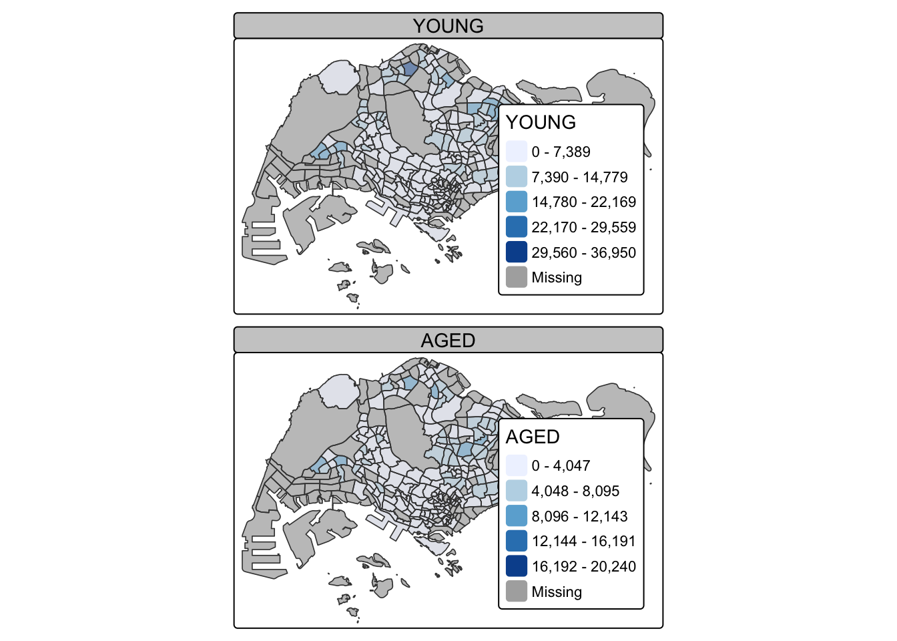
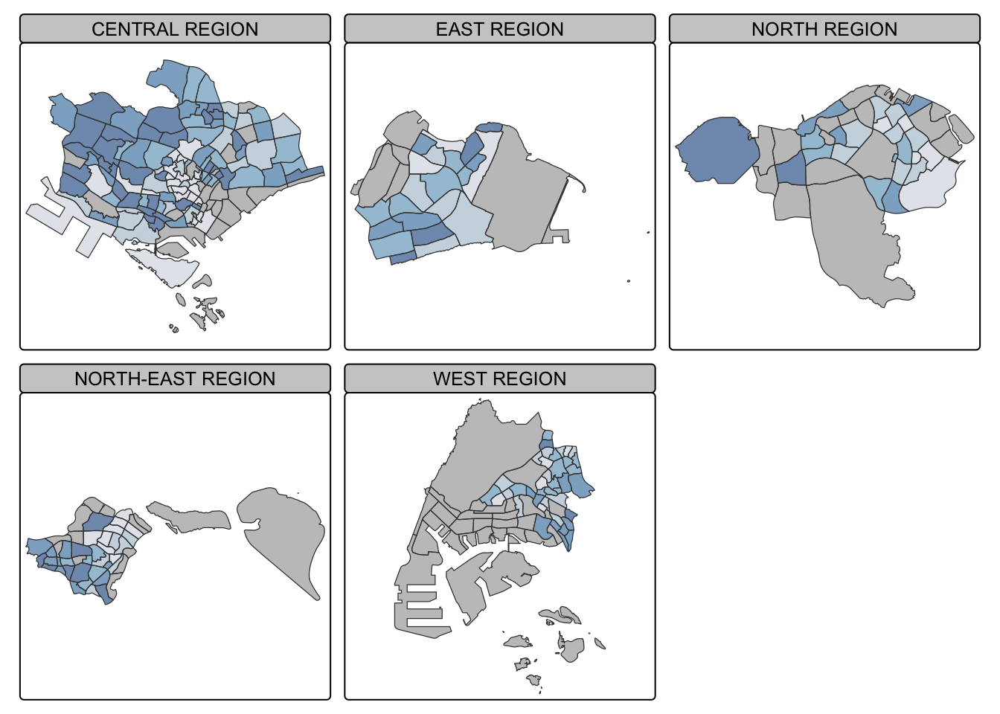

pacman::p_load(sf, tmap, tidyverse)Hands-on Exercise 9A
Choropleth Mapping with R
Choropleth maps are widely used to visualize the spatial distribution of demographic, social, and economic variables. By applying graduated colors to geographic units, they allow users to easily identify spatial patterns and regional variations. In this exercise, the tmap package in R is used to construct choropleth maps and explore best practices for effective thematic mapping.
1. Getting Started
2. Importing Data into R
This exercise uses two datasets.
The first is a shapefile containing the boundaries of Singapore’s planning subzones, which provides the geographic information needed for mapping.
The second is a population dataset in CSV format that contains demographic information such as age group, gender, and dwelling type. While the population data does not contain location coordinates, it can be joined to the shapefile using the Planning Area (PA) and Subzone (SZ) fields.
After combining the two datasets, choropleth maps can be created to show how population characteristics vary across different subzones in Singapore.
mpsz <- st_read(dsn = "data/MP14_SUBZONE_WEB_PL",
layer = "MP14_SUBZONE_WEB_PL")Reading layer `MP14_SUBZONE_WEB_PL' from data source
`/Users/sally/Desktop/xiaoyu3321/ISSS608-VAA/Hands-on_Ex/Hands-on_Ex09A/data/MP14_SUBZONE_WEB_PL'
using driver `ESRI Shapefile'
Simple feature collection with 323 features and 15 fields
Geometry type: MULTIPOLYGON
Dimension: XY
Bounding box: xmin: 2667.538 ymin: 15748.72 xmax: 56396.44 ymax: 50256.33
Projected CRS: SVY21mpszSimple feature collection with 323 features and 15 fields
Geometry type: MULTIPOLYGON
Dimension: XY
Bounding box: xmin: 2667.538 ymin: 15748.72 xmax: 56396.44 ymax: 50256.33
Projected CRS: SVY21
First 10 features:
OBJECTID SUBZONE_NO SUBZONE_N SUBZONE_C CA_IND PLN_AREA_N
1 1 1 MARINA SOUTH MSSZ01 Y MARINA SOUTH
2 2 1 PEARL'S HILL OTSZ01 Y OUTRAM
3 3 3 BOAT QUAY SRSZ03 Y SINGAPORE RIVER
4 4 8 HENDERSON HILL BMSZ08 N BUKIT MERAH
5 5 3 REDHILL BMSZ03 N BUKIT MERAH
6 6 7 ALEXANDRA HILL BMSZ07 N BUKIT MERAH
7 7 9 BUKIT HO SWEE BMSZ09 N BUKIT MERAH
8 8 2 CLARKE QUAY SRSZ02 Y SINGAPORE RIVER
9 9 13 PASIR PANJANG 1 QTSZ13 N QUEENSTOWN
10 10 7 QUEENSWAY QTSZ07 N QUEENSTOWN
PLN_AREA_C REGION_N REGION_C INC_CRC FMEL_UPD_D X_ADDR
1 MS CENTRAL REGION CR 5ED7EB253F99252E 2014-12-05 31595.84
2 OT CENTRAL REGION CR 8C7149B9EB32EEFC 2014-12-05 28679.06
3 SR CENTRAL REGION CR C35FEFF02B13E0E5 2014-12-05 29654.96
4 BM CENTRAL REGION CR 3775D82C5DDBEFBD 2014-12-05 26782.83
5 BM CENTRAL REGION CR 85D9ABEF0A40678F 2014-12-05 26201.96
6 BM CENTRAL REGION CR 9D286521EF5E3B59 2014-12-05 25358.82
7 BM CENTRAL REGION CR 7839A8577144EFE2 2014-12-05 27680.06
8 SR CENTRAL REGION CR 48661DC0FBA09F7A 2014-12-05 29253.21
9 QT CENTRAL REGION CR 1F721290C421BFAB 2014-12-05 22077.34
10 QT CENTRAL REGION CR 3580D2AFFBEE914C 2014-12-05 24168.31
Y_ADDR SHAPE_Leng SHAPE_Area geometry
1 29220.19 5267.381 1630379.3 MULTIPOLYGON (((31495.56 30...
2 29782.05 3506.107 559816.2 MULTIPOLYGON (((29092.28 30...
3 29974.66 1740.926 160807.5 MULTIPOLYGON (((29932.33 29...
4 29933.77 3313.625 595428.9 MULTIPOLYGON (((27131.28 30...
5 30005.70 2825.594 387429.4 MULTIPOLYGON (((26451.03 30...
6 29991.38 4428.913 1030378.8 MULTIPOLYGON (((25899.7 297...
7 30230.86 3275.312 551732.0 MULTIPOLYGON (((27746.95 30...
8 30222.86 2208.619 290184.7 MULTIPOLYGON (((29351.26 29...
9 29893.78 6571.323 1084792.3 MULTIPOLYGON (((20996.49 30...
10 30104.18 3454.239 631644.3 MULTIPOLYGON (((24472.11 29...popdata <- read_csv("data/respopagesextod2011to2020.csv")3. Data Preparation
Before mapping, the population data was cleaned and transformed to create a 2020 summary table. New variables were derived to represent the young population (0–24 years), economy-active population (25–64 years), aged population (65+ years), total population, and dependency ratio. Data wrangling was performed using functions from the dplyr and tidyr packages, including filtering, grouping, reshaping, and variable creation.
popdata2020 <- popdata %>%
filter(Time == 2020) %>%
group_by(PA, SZ, AG) %>%
summarise(`POP` = sum(`Pop`)) %>%
ungroup() %>%
pivot_wider(names_from=AG,
values_from=POP) %>%
mutate(YOUNG = rowSums(.[3:6])
+rowSums(.[12])) %>%
mutate(`ECONOMY ACTIVE` = rowSums(.[7:11])+
rowSums(.[13:15]))%>%
mutate(`AGED`=rowSums(.[16:21])) %>%
mutate(`TOTAL`=rowSums(.[3:21])) %>%
mutate(`DEPENDENCY` = (`YOUNG` + `AGED`)
/`ECONOMY ACTIVE`) %>%
select(`PA`, `SZ`, `YOUNG`,
`ECONOMY ACTIVE`, `AGED`,
`TOTAL`, `DEPENDENCY`)Before performing the georelational join, the values in the PA and SZ fields were converted to uppercase to ensure consistency with the shapefile, where PLN_AREA_N and SUBZONE_N are stored in uppercase. This preprocessing step helped avoid mismatches when joining the two datasets.
Next, we use left_join() from dplyr to combine the geographical data with the attribute table. We match them using the planning subzone names (for example, SUBZONE_N in one dataset and SZ in the other) as the common key.
mpsz_pop2020 <- left_join(mpsz, popdata2020,
by = c("SUBZONE_N" = "SZ"))write_rds(mpsz_pop2020, "data/rds/mpszpop2020.rds")4. Choropleth Mapping Geospatial Data Using tmap
4.1 Plotting a choropleth map quickly by using qtm()
The easiest way to draw a choropleth map in tmap is to use qtm(). It is short and simple to write, and it often gives a good default map without needing many extra settings. The code below creates a standard choropleth map, as shown in the example.
tmap_mode("plot")
qtm(mpsz_pop2020,
fill = "DEPENDENCY")
4.2 Creating a choropleth map by using tmap’s elements
Although qtm() is very convenient for quickly creating a choropleth map, it has a limitation: it is difficult to fine-tune the appearance of individual map layers.
Therefore, if you want to produce a more polished, publication-quality choropleth map like the one shown below, you should use the full set of drawing functions provided by tmap instead of qtm().
tm_shape(mpsz_pop2020)+
tm_polygons(fill = "DEPENDENCY",
fill.scale = tm_scale_intervals(
style = "quantile",
n = 5,
values = "brewer.blues"),
fill.legend = tm_legend(
title = "Dependency ratio")) +
tm_title("Distribution of Dependency Ratio by planning subzone") +
tm_layout(frame = TRUE) +
tm_borders(fill_alpha = 0.5) +
tm_compass(type="8star", size = 2) +
tm_grid(alpha =0.2) +
tm_credits("Source: Planning Sub-zone boundary from Urban Redevelopment Authorithy (URA)\n and Population data from Department of Statistics DOS",
position = c("left", "bottom"))
The basic structure of tmap starts with tm_shape(), followed by layer functions like tm_polygons(). Here, tm_shape() sets the data (mpsz_pop2020), and tm_polygons() draws the subzone polygons.
tm_shape(mpsz_pop2020) +
tm_polygons()
To draw a choropleth map showing the geographical distribution of a selected variable by planning subzone, we just need to assign the target variable such as Dependency to tm_polygons().
tm_shape(mpsz_pop2020)+
tm_polygons("DEPENDENCY")
In fact, tm_polygons() is a combination of tm_fill() and tm_borders().
tm_fill() colors the polygons using a default color scheme
tm_borders() adds the polygon outlines
The code below shows how to draw a choropleth map using only tm_fill().
tm_shape(mpsz_pop2020)+
tm_fill("DEPENDENCY")
To add the outlines of the subzones, we use tm_borders(), as shown in the code below.
tm_shape(mpsz_pop2020)+
tm_polygons(fill = "DEPENDENCY") +
tm_borders(lwd = 0.01,
fill_alpha = 0.1)
4.3 Data classification methods of tmap
Most choropleth maps use data classification to group many values into a few ranges (classes). In tmap, there are 10 classification methods, including: fixed, sd, equal, pretty (default), quantile, kmeans, hclust, bclust, fisher, and jenks.
The code below uses the quantile method with 5 classes.
tm_shape(mpsz_pop2020)+
tm_polygons("DEPENDENCY",
fill.scale = tm_scale_intervals(
style = "jenks",
n = 5)) +
tm_borders(fill_alpha = 0.5)
In the code chunk below, equal data classification method is used.
tm_shape(mpsz_pop2020)+
tm_polygons("DEPENDENCY",
fill.scale = tm_scale_intervals(
style = "equal",
n = 5)) +
tm_borders(fill_alpha = 0.5)
For built-in styles, class breaks are automatically calculated by tmap.
summary(mpsz_pop2020$DEPENDENCY) Min. 1st Qu. Median Mean 3rd Qu. Max. NA's
0.1111 0.7147 0.7867 0.8585 0.8763 19.0000 92 Now, we will plot the choropleth map by using the code chunk below.
tm_shape(mpsz_pop2020)+
tm_polygons("DEPENDENCY",
breaks = c(0, 0.60, 0.70, 0.80, 0.90, 1.00)) +
tm_borders(fill_alpha = 0.5)
4.4 Colour Scheme
tmap supports color ramps that can either be custom-defined or taken from preset palettes in the RColorBrewer package.
tm_shape(mpsz_pop2020)+
tm_polygons("DEPENDENCY",
fill.scale = tm_scale_intervals(
style = "quantile",
n = 5,
values = "brewer.greens")) +
tm_borders(fill_alpha = 0.5)
Notice that the choropleth map is shaded in green. To reverse the colour shading, add a “-” prefix.
tm_shape(mpsz_pop2020)+
tm_polygons("DEPENDENCY",
fill.scale = tm_scale_intervals(
style = "quantile",
n = 5,
values = "-brewer.greens")) +
tm_borders(fill_alpha = 0.5)
4.5 Map Layouts
A map layout is how all map elements are combined into one complete map.
These elements include the data layer, title, scale bar, compass, margins, and aspect ratio.
The color settings and classification methods discussed earlier control how the map is styled, especially the colors and data breakpoints.
Map Legend
tm_shape(mpsz_pop2020)+
tm_polygons("DEPENDENCY",
fill.scale = tm_scale_intervals(
style = "jenks",
n = 5,
values = "brewer.greens"),
fill.legend = tm_legend(
title = "Dependency ratio")) +
tm_borders(fill_alpha = 0.5) +
tm_title("Distribution of Dependency Ratio by planning subzone \n(Jenks classification)")
Map style
tm_shape(mpsz_pop2020)+
tm_fill("DEPENDENCY",
style = "quantile",
palette = "-Greens") +
tm_borders(alpha = 0.5) +
tmap_style("classic")
5.3 Cartographic Furniture
tm_shape(mpsz_pop2020)+
tm_polygons(fill = "DEPENDENCY",
fill.scale = tm_scale_intervals(
style = "quantile",
n = 5,
values = "brewer.blues"),
fill.legend = tm_legend(
title = "Dependency ratio")) +
tm_title("Distribution of Dependency Ratio by planning subzone") +
tm_layout(frame = TRUE) +
tm_borders(fill_alpha = 0.5) +
tm_compass(type="8star", size = 2) +
tm_grid(alpha =0.2) +
tm_credits("Source: Planning Sub-zone boundary from Urban Redevelopment Authorithy (URA)\n and Population data from Department of Statistics DOS",
position = c("left", "bottom"))
4.6 Drawing Small Multiple Choropleth Maps
Small multiple maps (or facet maps) are a set of maps shown side by side or stacked. They help compare how spatial patterns change across variables like time.
In tmap, you can create them in three ways:
Use multiple values in aesthetic arguments
Use
tm_facets()to group dataCombine separate maps using
tmap_arrange()

In this example, small multiple choropleth maps are created by assigning multiple values to at least one of the aesthetic arguments

In this example, multiple small choropleth maps are created by using tm_facets().
tm_shape(mpsz_pop2020) +
tm_fill("DEPENDENCY",
style = "quantile",
palette = "Blues",
thres.poly = 0) +
tm_facets(by="REGION_N",
free.coords=TRUE) +
tm_layout(legend.show = FALSE,
title.position = c("center", "center"),
title.size = 20) +
tm_borders(alpha = 0.5)
In this example, multiple small choropleth maps are created by creating multiple stand-alone maps with tmap_arrange().
youngmap <- tm_shape(mpsz_pop2020)+
tm_polygons("YOUNG",
style = "quantile",
palette = "Blues")
agedmap <- tm_shape(mpsz_pop2020)+
tm_polygons("AGED",
style = "quantile",
palette = "Blues")
tmap_arrange(youngmap, agedmap, asp=1, ncol=2)
4.7 Mappping Spatial Object Meeting a Selection Criterion
Instead of creating small multiple choropleth maps, you can use the selection function to map spatial objects that meet a specific criterion.
tm_shape(mpsz_pop2020[mpsz_pop2020$REGION_N=="CENTRAL REGION", ])+
tm_fill("DEPENDENCY",
style = "quantile",
palette = "Blues",
legend.hist = TRUE,
legend.is.portrait = TRUE,
legend.hist.z = 0.1) +
tm_layout(legend.outside = TRUE,
legend.height = 0.45,
legend.width = 5.0,
legend.position = c("right", "bottom"),
frame = FALSE) +
tm_borders(alpha = 0.5)